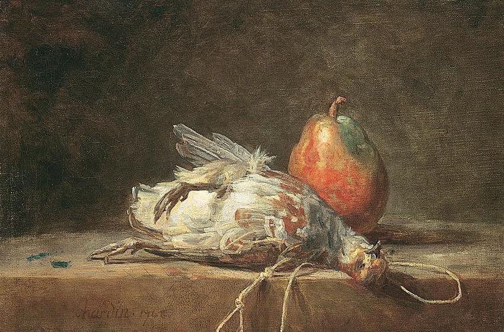
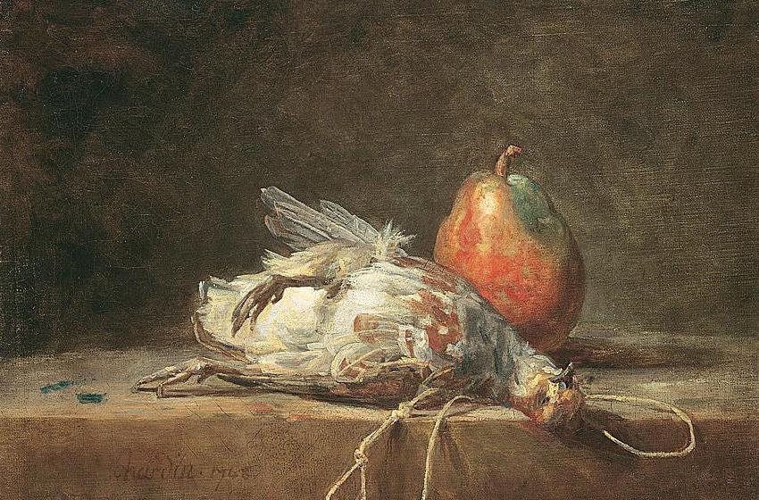

Romanticism was an artistic, literary and cultural movement that emerged in Europe in the late 18th century and lasted
until the mid-19th century. It was characterised by a valuing of feeling and imagination over reason and logic, and by a
fascination with nature, the supernatural and history.
In literature, Romanticism was characterised by the exaltation of subjectivity and the expression of emotions. Romantic
writers created complex and emotive characters, and used poetic and evocative language to create an atmosphere of
mystery and emotion. Recurring themes in Romantic literature include love, freedom, nature and death.
In painting, Romanticism was characterised by the use of intense colours and the creation of evocative atmospheres. Romantic artists created mysterious and dramatic landscapes, and used light and shadow to create effects of depth and drama. Recurring themes in Romantic painting include nature, landscape, the supernatural and history.
In music, Romanticism was characterised by the creation of new forms of music, such as the symphony and the symphonic poem, and by the use of folk and popular elements in classical music. Romantic composers, such as Ludwig van Beethoven and Franz Schubert, created emotional and profound works, reflecting the exaltation of subjectivity and the expression of emotions.

 

TRY SLIDING THE IMAGE
Romanticism also had a significant impact on philosophy and politics. During this period, new currents of thought
emerged, such as existentialism and liberalism, which advocated the importance of individuality and freedom. Romanticism
was also a period of important political revolutions, such as the French Revolution, which promoted the idea of freedom
and equality.
In architecture, Romanticism was characterised by the use of historical and ornamental elements. Romantic architects
created buildings that reflected the exaltation of history and culture, and used elements such as towers, arches and
pediments to create dramatic and grandiose effects.
Romanticism was also a movement that influenced fashion and design. During this period, long, flowing dresses with light
fabrics and floral prints became popular, evoking an image of romanticism and nostalgia. In addition, accessories such
as wide-brimmed hats, fans and gloves were used to complement the romantic look.
In design, Romanticism was characterised by the use of curved and sinuous forms, inspired by nature and the organic.
Romantic designs were ornamental and detailed, with floral motifs and delicate patterns. In addition, the use of
materials such as wrought iron and carved wood allowed for designs with a sense of depth and texture.
Finally, Romanticism was also a movement that promoted the idea of freedom and equality. During this period, important
political movements emerged, such as liberalism and nationalism, which fought for the abolition of slavery and the
recognition of civil rights. In addition, Romanticism promoted the idea of individuality and the importance of freedom
of expression, which laid the foundation for the struggles for civil rights and freedom of speech in later centuries.